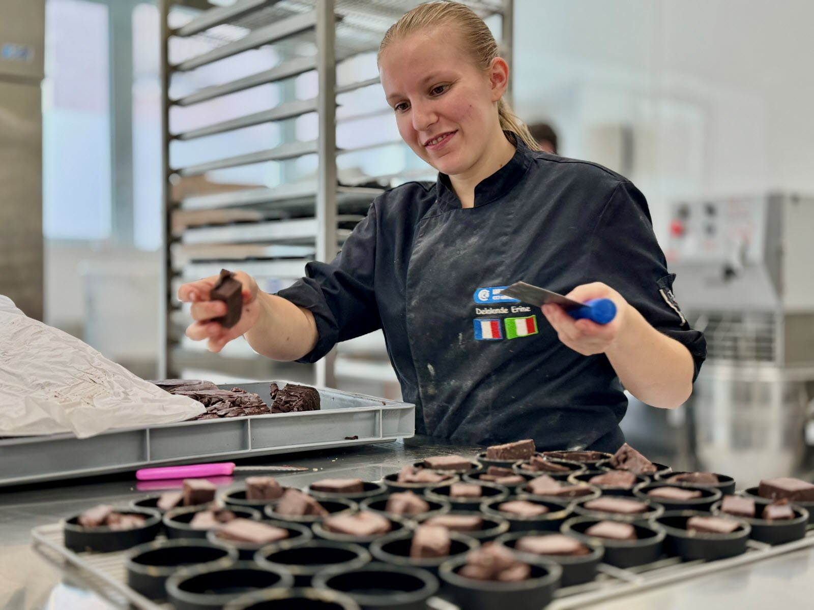
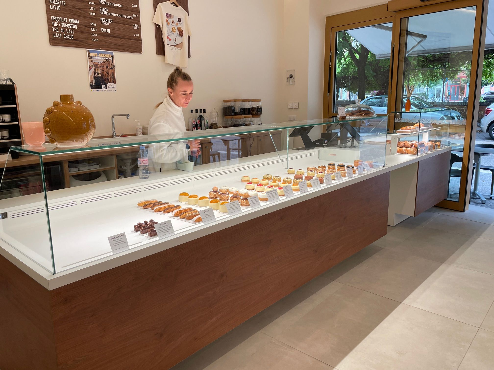

Le chocolat, une finition, un dernier regard. Chaque création prend forme dans le laboratoire de la maison.
Pâtisserie artisanale · Grenoble
Le goût des saisons, place Championnet.
etienne culotpâtisserie · viennoiserie
Figue & fleur d’oranger
De saison.
Et un peu de culot.
100% fait maison✳Le goût des saisons✳Place Championnet✳
À chaque envie,
son caractère.
Les créations changent avec les saisons.
Quelques gourmandises de la maison, à découvrir de plus près.
Pour savoir ce qui vous attend en boutique, retrouvez-nous sur Instagram
Un peu de culot.
Laissez-vous surprendre.
Figue & fleur d’oranger
Avant la première bouchée,
il y a le geste.
Derrière les vitrines, une équipe et le plaisir de faire. Entrez dans les coulisses de la gourmandise.
Au laboratoireLe savoir-faire

La touche finale, dans le laboratoire.
Clément Berthet / Le Dauphiné LibéréLe chocolat, une finition, un dernier regard. Chaque création prend forme dans le laboratoire de la maison.
La maison, place Championnet
Poussez
la porte.
Retrouvez-nous au 6/8, place Championnet.
La gourmandise a son petit coin de Grenoble.
Bienvenue chez nous

Un petit tour à l’intérieur.
On se retrouve ici.
6/8place Championnet
38000 Grenoble
38000 Grenoble
Étienne Culot · Pâtisserie
Préparer mon itinéraire
Un coup de fil ?04 76 46 04 57
Les nouvelles de la maison sur Instagram